Rośliny w moim ogródku
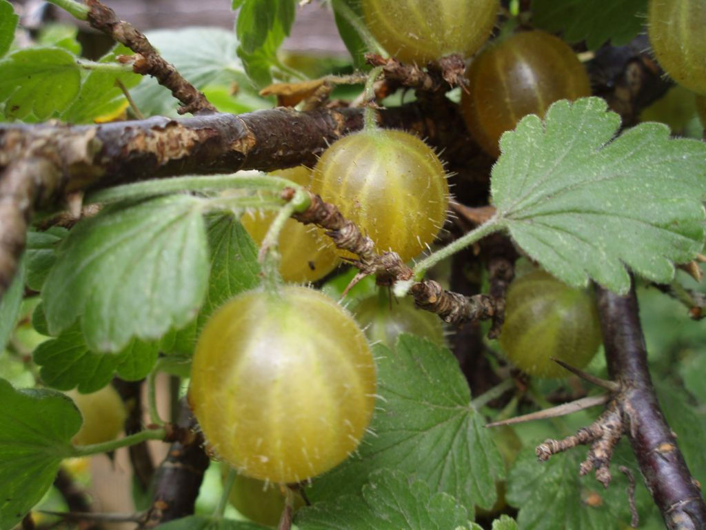
W Polsce występuje w trzech podgatunkach:
Ribes uva-crispa L. subsp. reclinata (L.) Rchb. Roślina uprawiana o czerwonych owocach, słabo kolczasta, naga, o łukowatych gałązkach;
Ribes uva-crispa L. subsp. uva-crispa. Dziko rosnąca, silnie kolczasta, o nagich owocach i owłosionej zalążni;
Ribes uva-crispa L. subsp. grossularia (L.) Rchb. Uprawiana i dziczejąca, z zalążnią i owocem miękko owłosionymi oraz ogruczolonymi.
Dobrze rośnie na glebach żyznych, dostatecznie wilgotnych, o lekko kwaśnym odczynie.
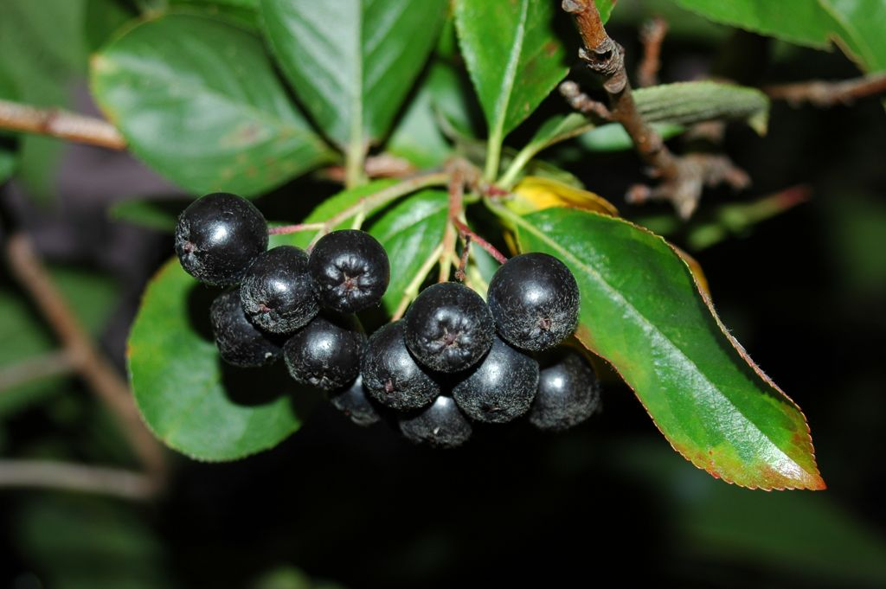
Aronia to krzew o wyjątkowo wysokiej wartości zdrowotnej i bardzo małych wymaganiach. Coraz częściej pojawia się w ogrodach nie tylko ze względu na swoje owoce, ale też ze względu na walory ozdobne – ciemnozielone liście, biały kwiatostan wiosną i piękne, czerwone przebarwienia jesienią przyciągają wzrok. To roślina odporna na suszę, mróz i choroby, dlatego świetnie sprawdza się na działkach i w przydomowych ogrodach. Dowiedz się, jak wygląda drzewo aronii, z czym sadzić ją w ogrodzie i jak o nią dbać, by obficie owocowała przez wiele lat.
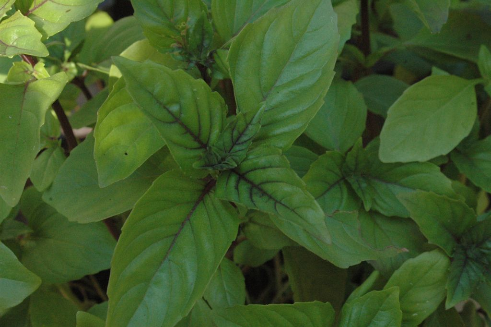
Nie ma nic lepszego niż aromatyczne liście bazylii prosto z własnego ogrodu czy doniczki na parapecie. To zioło nie tylko dodaje smaku i świeżości Twoim potrawom, ale także wspiera zdrowie, działa antyoksydacyjnie i poprawia nastrój. W naszym przewodniku dowiesz się wszystkiego o bazylii - od historii i odmian, przez uprawę w ogrodzie i w domu, po zbiór, przechowywanie oraz inspiracje kulinarne i zdrowotne.
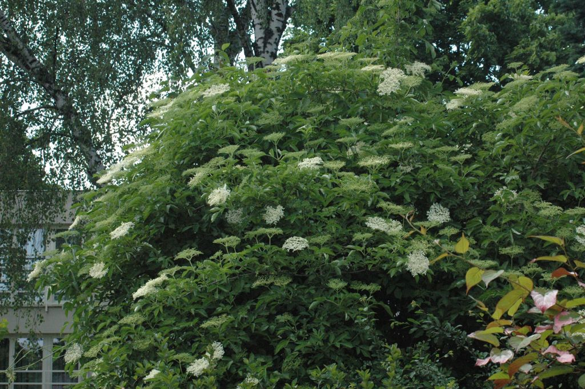
Bez pospolity (Sambucus nigra) od wieków towarzyszy człowiekowi zarówno w ogrodach, jak i w naturalnym krajobrazie. Ten okazały krzew, a czasem nawet niewielkie drzewo, może osiągać wysokość od 3 do 10 metrów, tworząc rozłożystą koronę. Charakteryzuje się nieparzystopierzastymi liśćmi złożonymi z 5-7 listków o ząbkowanych brzegach oraz kwiatami o intensywnym, słodkim zapachu. Kwitnie w maju i czerwcu.

Owoce czarnej porzeczki mają okrągły kształt i intensywny fioletowo-czarny kolor. Ich cechą charakterystyczną jest kwaśno-słodki smak, a w środku ciemnofioletowy miąższ. Charakterystyczny zapach mają także liście czarnej porzeczki, dzięki czemu wykorzystywane są często w aromaterapii i przemyśle kosmetycznym.

Porzeczka czerwona, z jej charakterystycznym, słodko-kwaśnym smakiem, jest nie tylko przysmakiem lata, ale też ozdobą każdego ogrodu. Jej soczyste, rubinowe owoce kuszą nie tylko smakiem, ale i wyglądem, dodając uroku każdej przydomowej przestrzeni. Czerwona porzeczka to nie tylko smakowity dodatek do letnich deserów, ale także cenne źródło witamin i składników mineralnych.
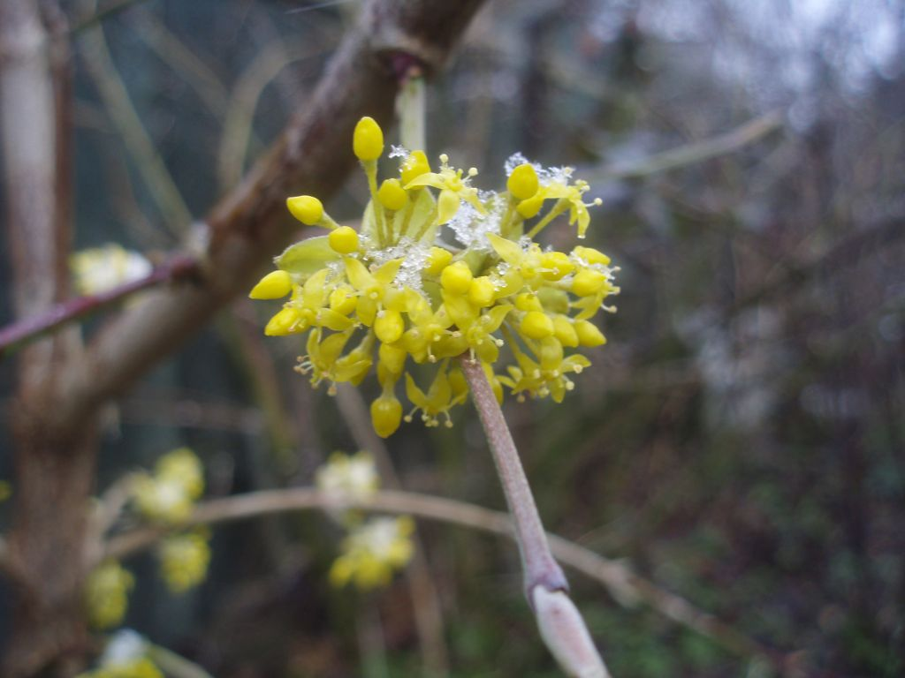
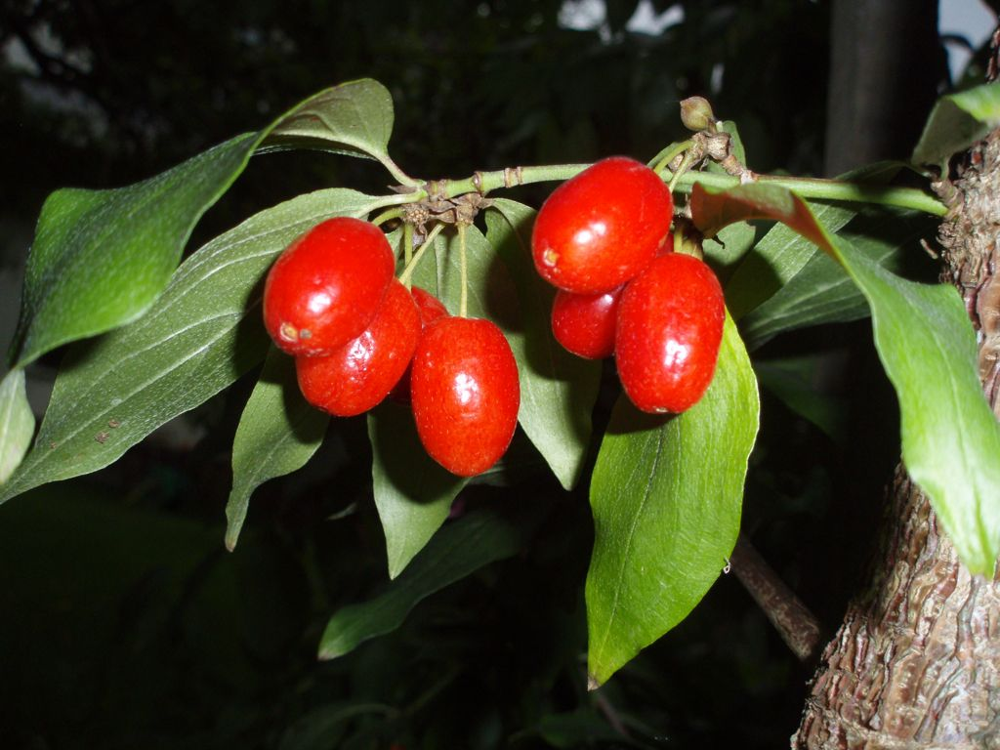
Dereń jadalny uprawia się dla owoców. Nic nie ujmując innym gatunkom drzew i krzewów owocowych, warto jednak zaznaczyć, że dereń ma nad nimi pewną przewagę. Do szczególnych zalet derenia jadalnego należy łatwość uprawy - gatunek nie jest wymagający, dobrze rośnie i zadowalająco owocuje na przeciętnych glebach. Warto tylko zadbać o odpowiedni odczyn podłoża: dereń jadalny preferuje gleby wapienne, o odczynie zasadowym.
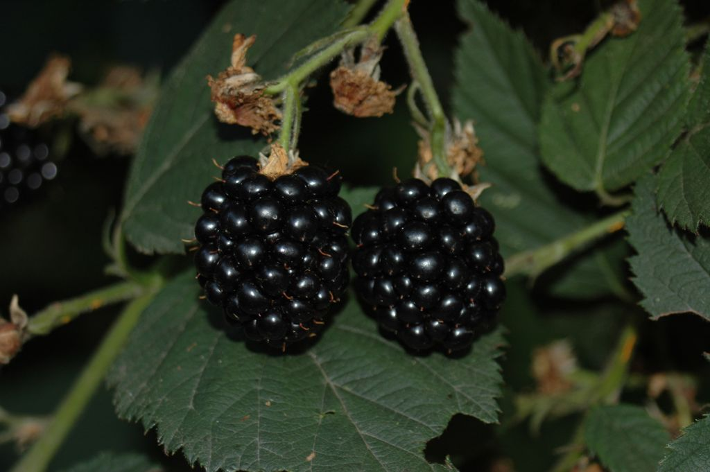
Jeżyny to krzewy owocowe, które coraz chętniej sadzimy w ogrodach – nie tylko ze względu na ich pyszne, słodko-kwaśne owoce, ale też z powodu ich walorów dekoracyjnych i stosunkowo łatwej pielęgnacji. Dostępność nowoczesnych odmian, w tym jeżyn bezkolcowych, sprawia, że są one wygodne w uprawie nawet na małych działkach. Ich owoce świetnie nadają się do jedzenia na surowo, wypieków, soków i nalewek, a same rośliny rosną bujnie i szybko.
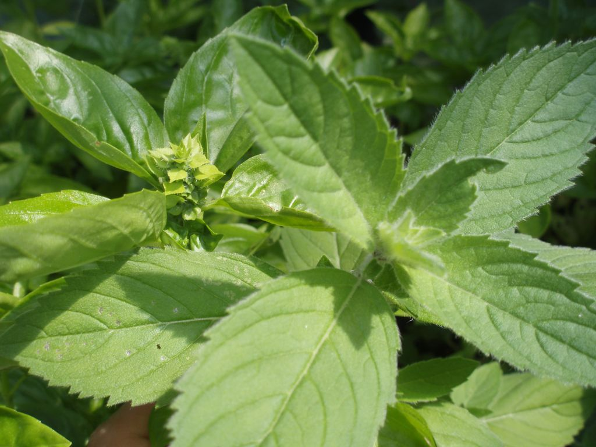
Mięta jest często stosowanym ziołem i przyprawą w kuchni. Ceniona jest za orzeźwiający miętowy smak oraz prozdrowotne właściwości. Napar z mięty może pomóc na problemy żołądkowe, ale nie tylko. Miętę możesz uprawiać w doniczce w domu i na balkonie; możesz też ją posadzić w ogrodzie, wówczas będzie działa odstraszająco na niektóre owady.

Mini kiwi to coraz popularniejsza roślina owocowa uprawiana w polskich ogrodach. W przeciwieństwie do tradycyjnego kiwi dostępnego w sklepach, jego owoce są mniejsze, gładkie i można je jeść razem ze skórką. Roślina wyróżnia się wysoką odpornością na mróz, szybkim wzrostem oraz obfitym owocowaniem. Dzięki niewielkim wymaganiom i dekoracyjnemu wyglądowi mini kiwi doskonale sprawdza się jako pnącze sadzone przy pergolach, altanach, ogrodzeniach czy trejażach.
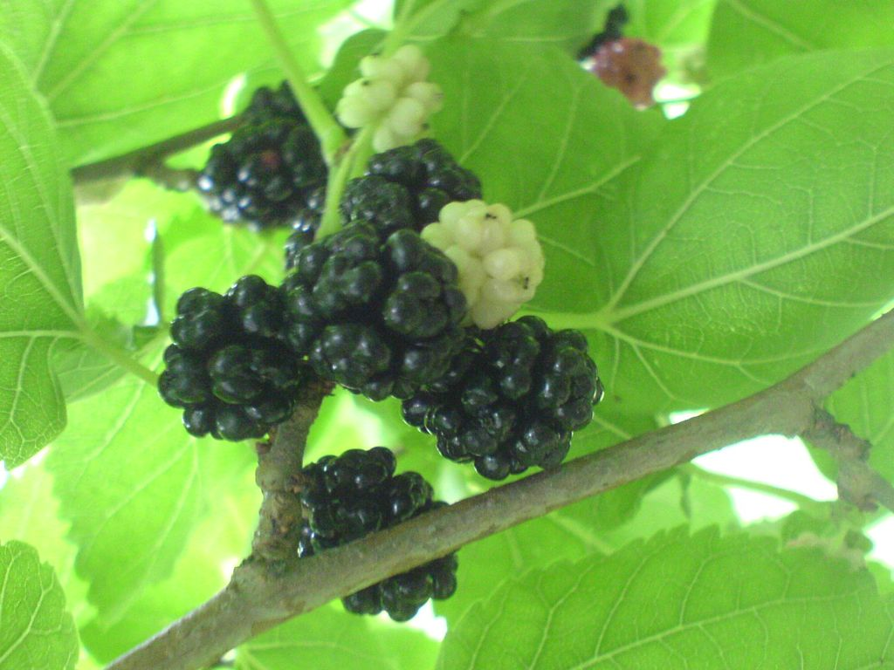
Morwa (Morus) to liściaste drzewo owocowe i ozdobne z rodziny morwowatych. Jej kuzyni to np. brusonecja, chlebowiec, fikus, mlekowiec. W naturalnym środowisku morwa rośnie w Azji, Afryce oraz Ameryce Północnej i Ameryce Południowej. Znanych jest wiele gatunków tego drzewa. W Polsce uprawia się morwę białą, morwę czarną oraz morwę czerwoną (najpopularniejsza i najmniej wymagająca jest biała) – wszystkie mają jadalne owoce.
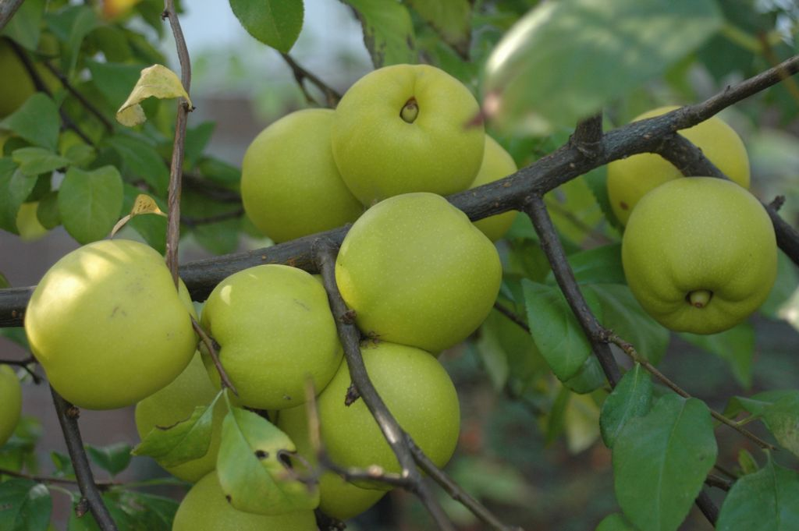
Pigwowiec to ozdobny krzew liściasty, ceniony za efektowne kwiaty i aromatyczne, jadalne owoce. Najlepiej rośnie na słonecznym stanowisku i w przepuszczalnej, żyznej glebie. Jest odporny na mróz, suszę, choroby oraz szkodniki. W uprawie oczekuje słonecznej wystawy i umiarkowanego podlewania.
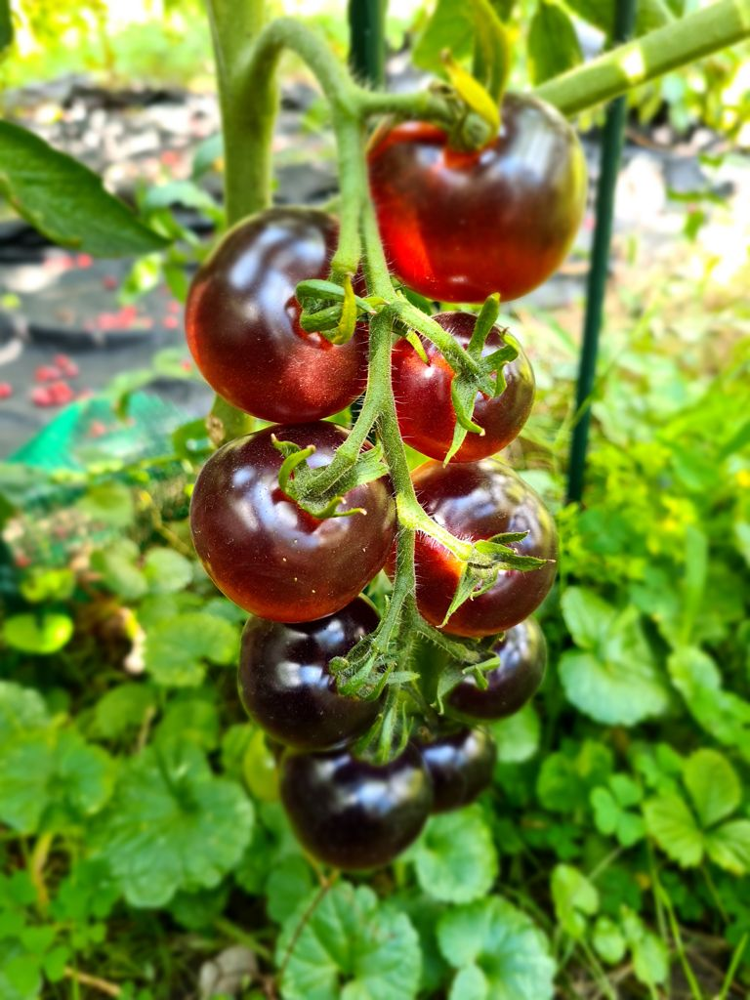
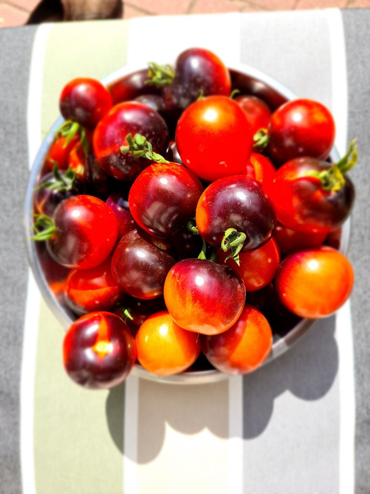
Pomidor zwyczajny (Solanum lycopersicum) to gatunek rośliny z rodziny psiankowatych dorastający zwykle do 1,5 m wysokości (u odmian szklarniowych nawet do kilku metrów). Roślinę wyróżniają pojedynczo lub podwójnie pierzastodzielne liście oraz żółte kwiaty o zaostrzonych płatkach, zebrane w jednostronne, kilkukwiatowe skrętki w kątach liści. Owocem jest duża, soczysta jagoda, wielkości od 20 do ponad 100 mm średnicy.
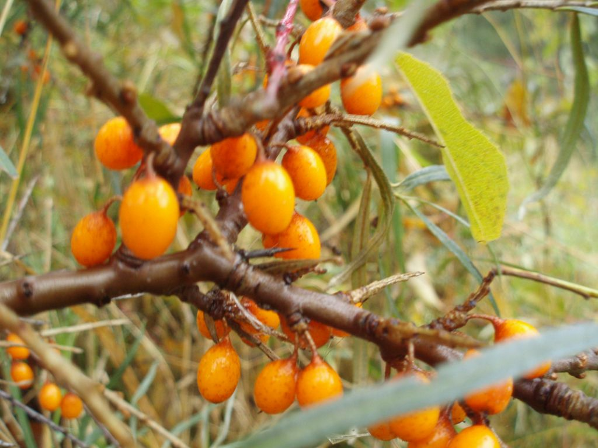
Rokitnik zwyczajny/pospolity (Hippophae rhamnoides) to wolno rosnący krzew liściasty, o szerokim, nieregularnym pokroju. Gatunek ten osiąga wysokość 3-6 m i podobną szerokość. Charakteryzuje się lancetowatymi, srebrzystymi liśćmi oraz sztywnymi, ciernistymi pędami. Żółte kwiaty są dość niepozorne, natomiast największą ozdobą rośliny są kuliste, pomarańczowe, jadalne owoce.
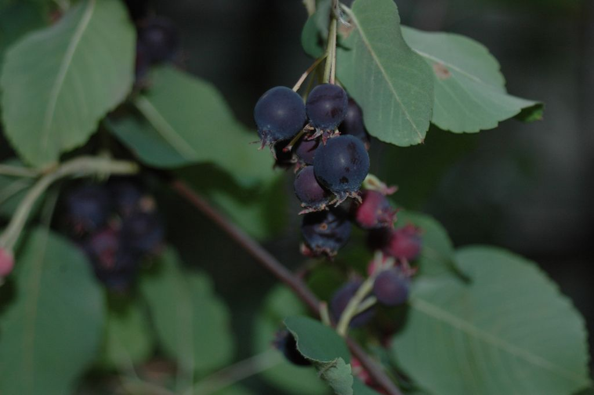
Krzew lub małe drzewo o przepięknych, białych kwiatach i jadalnych owocach. Niezwykle atrakcyjne jesienią za sprawą liści przebarwiających się na intensywnie pomarańczowo-czerwony kolor. Słodkie, bardzo smaczne owoce dojrzewają latem i mogą być jadane na surowo, doskonale nadają się także do przetworów.
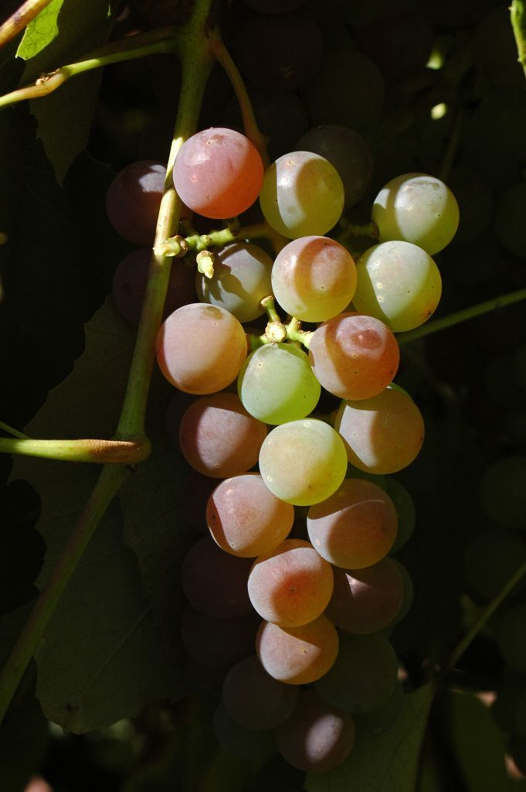
Winogrona to jedne z najsmaczniejszych owoców, jakie zna świat. I choć występują w różnych odmianach, to jedno jest pewne – nie tylko wyśmienicie smakują, ale też są bogate w różnego rodzaju substancje odżywcze, witaminy i oczywiście mikroelementy.
 www.rglab.pl
www.rglab.pl